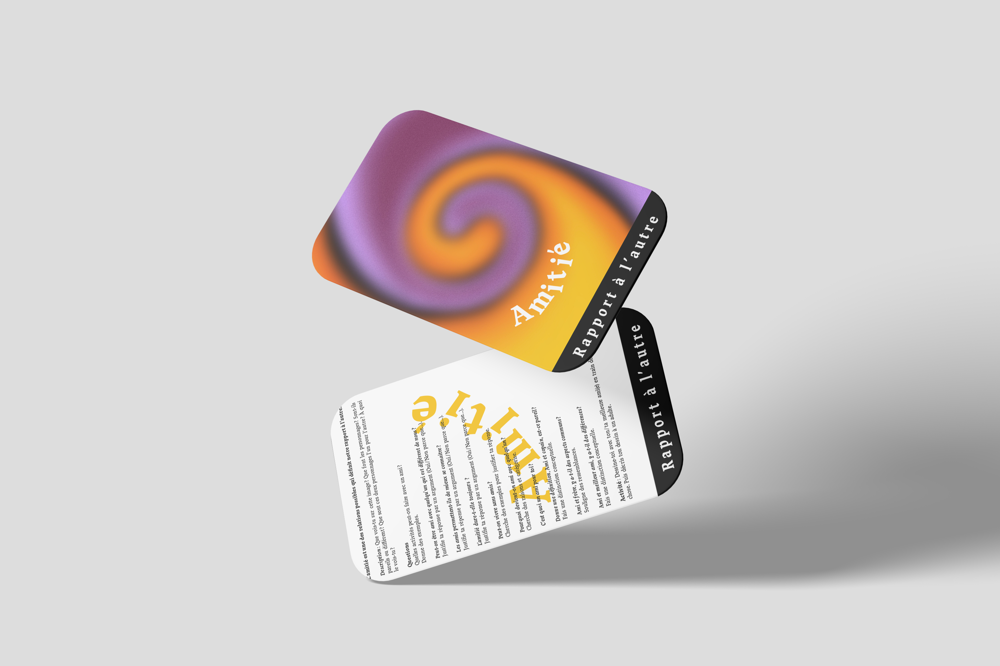
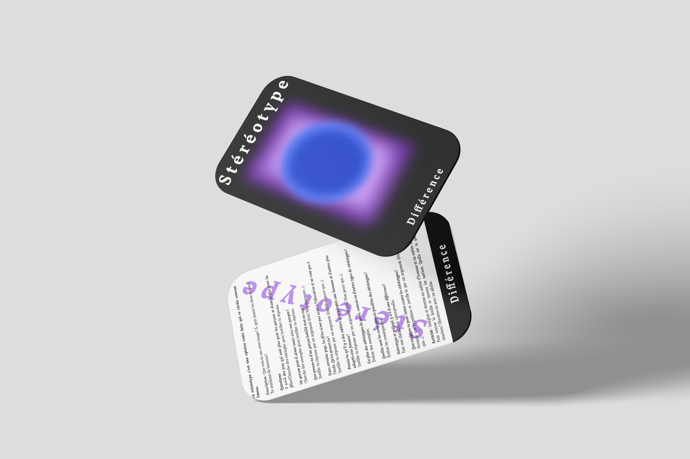
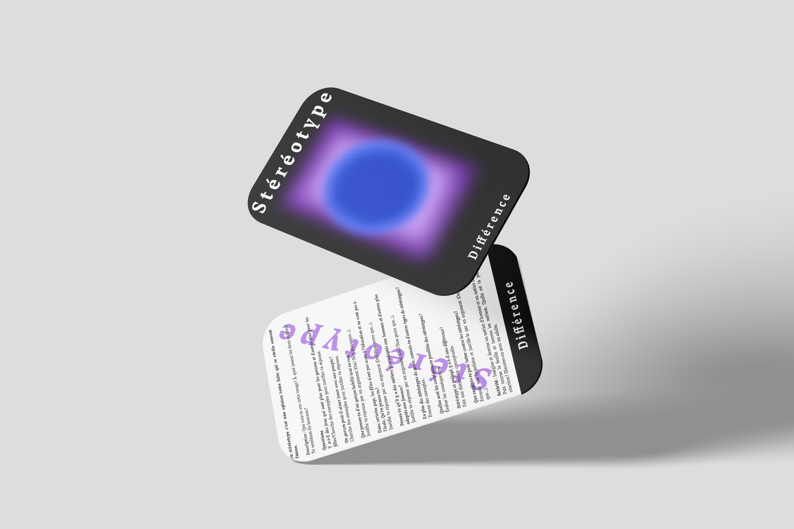

Les émotions à travers les formes et les couleurs. Avec l’intervention de la philosophe … qui a travaillé sur un jeu de carte philosophique destiné aux enfants nous étions alors au défi d’adapter les cartes à une cible plus âgée, des adolescents qui peuvent imaginer plus qu’une image. Dans ces cartes je voulais vraiment qu’on appelle les sentiments de façon abstraite et qu’on les ressent sans images explicites et clair. Cela permet que chacun s’associe cette image à une expérience et qui le ressente différemment dans être contraint à une image. Je voulais travailler également avec les couleurs et le grain pour créer cette effet de forme flottante et modulable. Elle peuvent changer et évoluer dans un espace. Comme nos émotions elle sont puissante et s’expriment différentes pour chacun.
 
